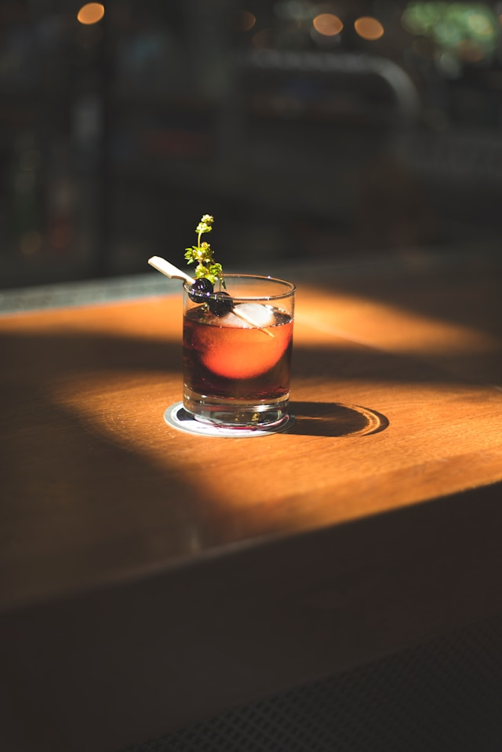
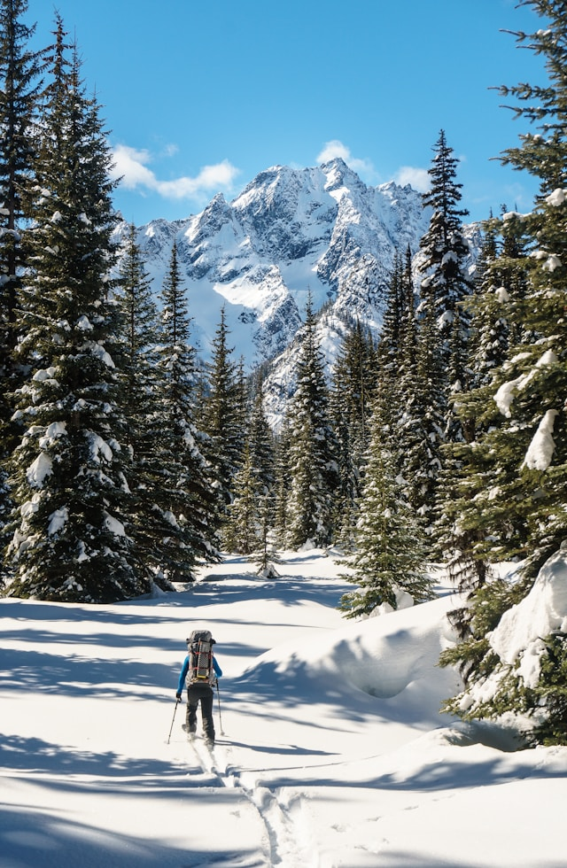
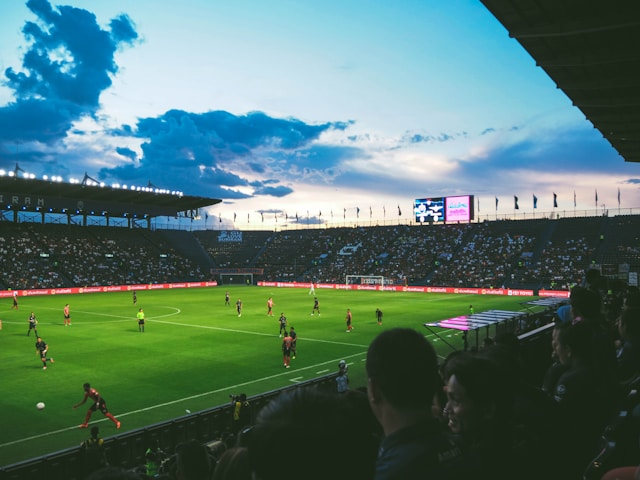

Your guide
"I have lived in Salt Lake City my entire life and I can provide you with the true Utahn experience for whatever interests you the most."

Try out the newly opened 'Mono Tape Club', a Japanese inspired listening and drinking experience. Or, venture out to Park City and taste whiskey from High West Distillery.

Notorius for it's nearby skiing, Salt Lake City is within a few hours drive from National Parks, and other activites like climbing, hiking, camping, rafting, and fishing.

Salt Lake City is home to three top-level sports teams from the MLS, NBA, and now the NHL. Catch the local soccer, basketball, and hockey in-action.
"I have lived in Salt Lake City my entire life and I can provide you with the true Utahn experience for whatever interests you the most."